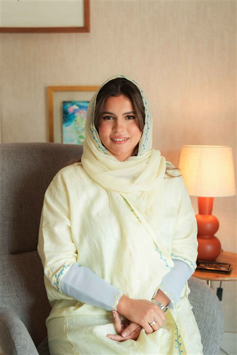
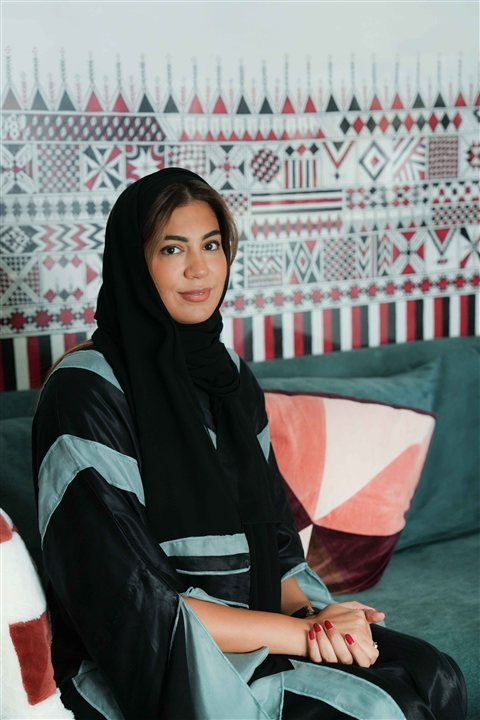
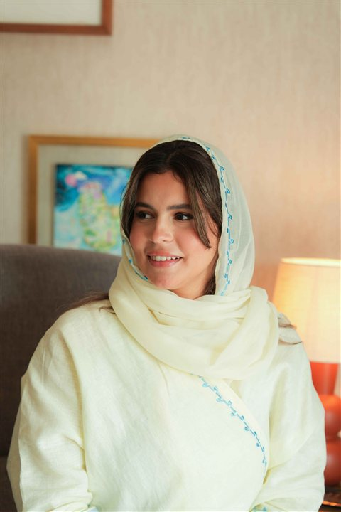

About Noetic · Two directionsOne identity.
One identity.
Two ways to tell the story.
Two complete stories, from the first feeling to your next choice. Original Noetic typography, real team portraits, richer English copy and motion made for each direction.
Elegance begins with a feeling.

A considered feeling
A complete founder-led story: the woman, our point of view, a closer-look interaction, founders, the team, a choosing journey, reassurance and FAQs.
Open the complete first page


The people behind the feeling
A complete people-led story: an interactive five-person portrait gallery, founder spreads, animated principles, the team, wardrobe inspiration, reassurance and FAQs.
Open the complete second pageDesign and copy proposals for review. English spellings of Renad Nagro and Ibrahim Mousli are provisional. The current Noetic store has not been changed.